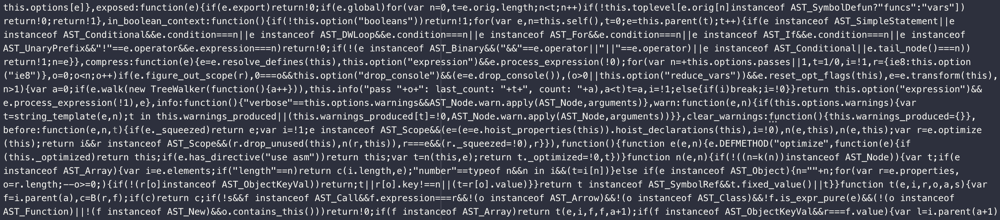

terser
REPL
Docs
Blog
JavaScript parser, mangler and compressor toolkit for ES6+
Try It Out

Who is Using Terser?
Terser is used by these projects
More terser Users
Sponsors / Patreons
More terser Sponsors